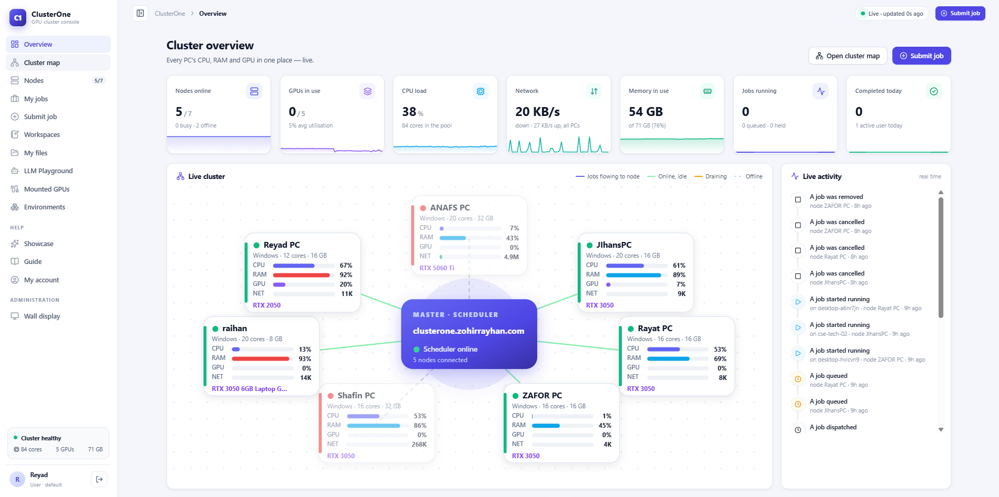
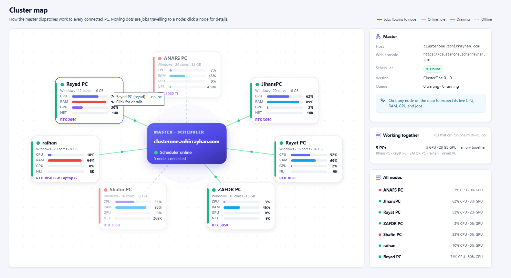
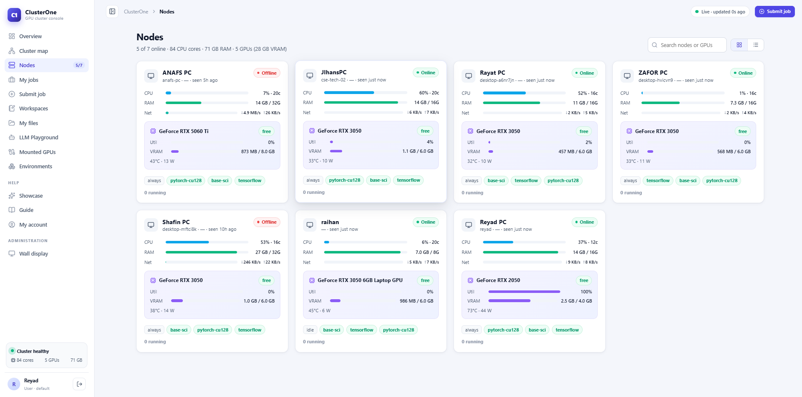
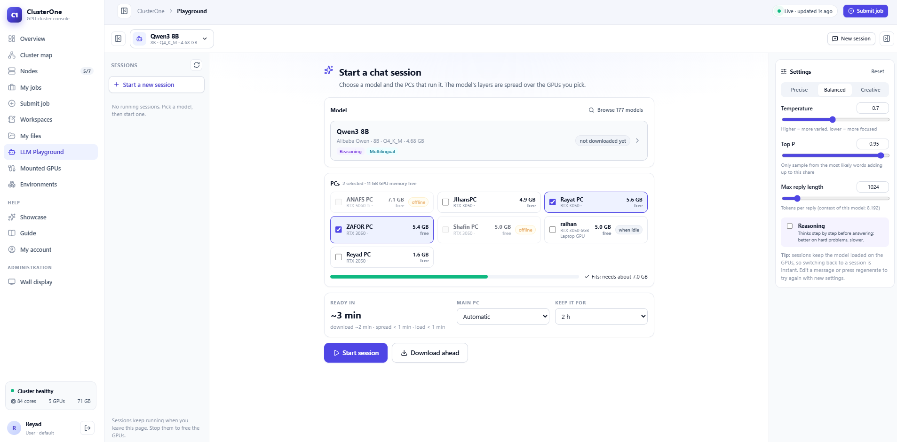
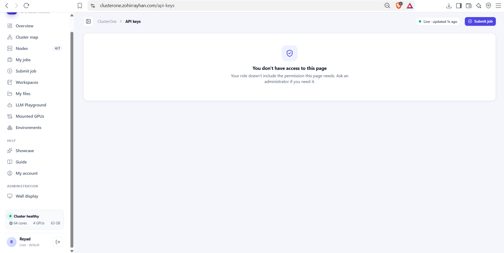

ClusterOne
GPU Cluster Management Platform: website audit & system walkthrough

Ordinary lab PCs, working as one GPU cloud
ClusterOne pools the lab's existing Windows PCs into a shared, self-managing compute service. Users send code from a browser, terminal or Python. The master picks a free GPU, runs the job and returns the results; work too big for one PC is split across several.
5 online, 2 offline at capture time
28 GB VRAM pooled (RTX 3050 ×4, 3050 Laptop, 2050; 5060 Ti offline)
71 GB RAM across online PCs
Showcase counter (0 running)
Monitor · compute · AI · help · admin
Web console, CLI, Python SDK, REST API
Audit scope & method
- Account: Reyad, role
User · default(no admin) - 8 of 16 pages inspected; 8 known only from links
- Read-only: no jobs submitted, no sessions or mounts started
- The audit sandbox could not open the site (proxy 403), so evidence was captured in the owner's own browser
- Labels: verified inference recommendation
Five module groups around one console
Click a module
Each box shows what was observed and how it was tested. Drag boxes to rearrange; Reset layout restores them.
Every page shares a sidebar, a "Live · updated Ns ago" indicator and a global Submit job button.
Every PC's CPU, RAM and GPU in one live view
- KPI tiles with sparklines: nodes online 5/7, GPUs in use 0/5, CPU 38%, network, memory 54/71 GB, jobs, completed today.
- Master · scheduler at the centre, 5 nodes connected; links show job flow and idle or draining state.
- Live activity feed: submitted, dispatched, queued, running, cancelled, removed.
- Offline nodes (red, dashed link) still show last-known bars issue I-02
- Live indicator, "updated 0s ago"; values changed between two captures.
- Sidebar health card with pooled cores, GPUs and RAM.
Topology map and per-PC hardware detail

- Hover tooltip on a node: "online · Click for details" verified
- Master panel: scheduler Online, version 0.1.0, queue 0/0.
- Working together: 5 PCs that can run one multi-PC job (28 GB).

- Summary: 5 of 7 online · 84 cores · 71 GB · 28 GB VRAM.
- Status, hostname, last seen; offline PCs in red.
- GPU card with util, VRAM, °C and W. This one is 100% busy yet "free" I-04
- Policy + environments:
always/idle· pytorch-cu128 · base-sci · tensorflow.
The life of a job, as documented by the site
Submit
Web form, CLI, Python or REST. Quotas are checked at once.
Queue
Fair-share queue on the master; every submission is audit-logged.
Match
Free PC with enough GPU memory; skips PCs in local use.
Run
Low-privilege sandbox, own GPU only, live log stream.
Results
outputs/ comes back as outputs.zip.
Four ways in: same cluster, same rules
# terminal (pip install …/install/clusterone-sdk.zip) clusterone submit . --gpus 1 -f -- python train.py clusterone submit . --gpus 1 --nodes 2 -f -- python train.py # DDP # REST: POST /api/v1/jobs · Authorization: Bearer c1u_…
Job statuses (Guide)
SubmittingQueuedRunningTransferringCompletedFailedTimed outHeldCancelled
Platform exit codes 90–93 = bad zip, env missing, package install failed, dataset download failed.
What a job can use
- Environments: base-sci, pytorch-cu128 (default), tensorflow. TF is CPU-only on Windows I-01
- Multi-PC: data-parallel (fp16 gradients) or GPipe-style pipeline over the 1 Gbps LAN
- Storage: shared datasets, My files (20 GB default), JupyterLab / VS Code workspaces
- Not tested Submit, My jobs, Workspaces and Files pages were not captured
Run models bigger than any single PC

- Model: Qwen3 8B Q4_K_M, 4.68 GB (177 models)
- Offline PCs are disabled in the picker
- Fit check: 2 PCs · 11 GB free · needs 7.0 GB
- Ready in ~3 min: download, spread, load
- Settings: presets, temperature, top-p, reasoning
Mounted GPUs: borrow lab GPUs for your own PC
clusterone mount --gpus 2 --model qwen7b- llama.cpp runs locally; borrowed GPUs hold layers over RPC
- Serves an OpenAI-compatible API on
127.0.0.1:8080/v1; prompts stay on the user's PC - Auto-release after 5 min of silence; every mount is audit-logged
- Off-site use requires an admin to run
mesh join
verified page and PC selection · not tested Start session and mounting, which would reserve shared GPUs
Roles, quotas and scoped API keys

- Permission denied, handled cleanly
- URL
/api-keys(not in sidebar) - Capacity changed: 4/7 nodes then
- Role: User · default
Five built-in roles + custom roles
Administrator · Operator · User · API client · Viewer, with per-person grant/deny. The site says every page, button and API call is checked on the server.
Quotas for this account (Guide)
4 active jobs · 2 GPUs per job · 1440 min per job (group default); everything else unlimited. Fair share between groups.
API keys
c1u_… keys sent as Bearer or X-API-Key, with scopes, expiry, IP allow-list and rate limit. Where regular users create their own keys is unclear I-03
No failures observed in what was tested
| # | Interaction | Result |
|---|---|---|
| T01–02 | Overview loads and refreshes live | Verified |
| T03–04 | Cluster map + node hover tooltip | Verified |
| T06 | Nodes grid with live GPU metrics | Verified |
| T08–10 | Playground: select PCs, fit check, offline PCs disabled | Verified |
| T12–15 | Mounts, Guide, planner, Showcase render | Verified |
| T17 | /api-keys as User role | Restricted |
| T05, T07 | Node click, search, list view | Not tested |
| T11 | Start LLM session (would reserve GPUs) | Not tested |
| T16 | Showcase interactive demos | Not tested |
18 interactions
13 verified · 1 restricted · 4 not tested · 0 failed
30 features documented
19 verified · 1 partial · 1 restricted · 9 not tested
Caveat: the sample covers only captured states. With no browser console or network trace, hidden errors cannot be ruled out.
Cloud master, outbound-only lab agents
Click a component
Each box shows its evidence and source. Drag boxes to rearrange; Reset layout restores the original.
Keyboard: Tab to a box, Enter for details, Alt+arrows to move it.
Three paths: batch jobs, browser chat, borrowed GPUs
Click a step
Steps come from the Guide, Showcase and Mounted GPUs manual. Drag to rearrange; Reset layout restores it.
Each path ends by giving capacity back: jobs end at their time limit, sessions are stopped, mounts are released.
What works well, and what holds it back
Strengths (observed)
- Real-time observability: KPIs, topology, per-GPU temperature and power 01–03
- Guidance for non-experts: Playground fit check and ETA, resource planner, plain-language manuals 04, Guide
- Access control enforced in the UI; roles, quotas and scoped keys documented 05
- Several entry points: web, CLI, SDK and a documented REST API
- Honest docs: both Showcase and Guide list known limits openly
- Reuses existing hardware: 7 lab PCs, 28 GB pooled VRAM
Limitations (observed or documented)
- Small GPUs (4–8 GB each); multi-PC is needed for bigger models
- Windows-only nodes: Gloo only, no FSDP/ZeRO-3; TensorFlow has no GPU I-01
- Depends on PC owners: 2/7 offline, high host RAM, GPU busy but "free" I-04, I-06
- Network: 1 Gbps LAN, some slow links I-07
- Display gaps: stale metrics on offline nodes; unclear API-key path I-02, I-03
- Early release (v0.1.0); performance claims not independently verified
Prioritised improvements from the findings
P1 Quick wins
- Grey out offline-node metrics and label them "last known · 5h ago" I-02
- Add an "in local use" GPU state when utilisation is high with no job I-04
- Link the /api-keys denial page to the personal key box on My account I-03
- Warn when a TensorFlow job asks for a GPU on Windows I-01
P2 Reliability
- Fix the 10 Mbps link and show link speed on node cards I-07
- Pre-cache imagenette2-320 on online nodes I-08
- Fix the empty "layers 49–48" stage in the pipeline demo I-05
- Publish the benchmark method behind the Showcase numbers A-04
P3 Roadmap
- Cloud-burst nodes for 24–80 GB jobs site's own plan
- Checkpoint-and-resume helpers site's own plan
- Notebook integration and GPU-hour / cost dashboards site's own plan
- A Linux/WSL node for NCCL and TensorFlow GPU support
Next audit step: repeat with an admin account and an instrumented browser (console and network logs) to cover the 8 uncaptured pages, the API and the admin tools.
A working lab GPU cloud with a polished console
1 · It is live
Seven lab PCs report real-time CPU, RAM and GPU data to a cloud master. Every captured interaction worked.
2 · It goes beyond one GPU
Multi-PC jobs, the LLM Playground and Mounted GPUs pool small cards into usable capacity.
3 · It is governed
Roles, quotas, scoped keys and audit logging; the permission wall was verified.
4 · It is honest, with clear next steps
The limits are mostly hardware and network; the UI fixes in P1 are small.
Still unverified
- Submit, My jobs, Workspaces, My files, Environments, My account and Wall display pages
- Actual job, session and mount execution; CLI and REST calls
- Scheduler identity (HTCondor inferred), mesh technology, login method, front-end framework
- The Showcase's performance figures
Full evidence lives in research/; diagrams in assets/diagrams/.